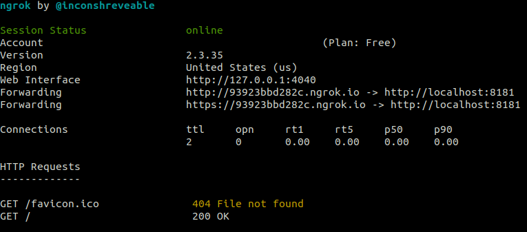
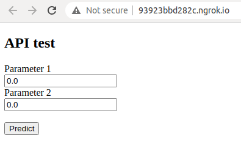

Sometimes you need to show your project to your colleagues, interviewer, etc, or provide some tests. When you serve it in a local network, you need to type the IP address and the port. But if you want to do that over the Internet, you can encounter some troubles (http://public_ip:port doesn’t work), as usually, your computer is behind the NAT, which means you should provide ports forwarding, but it can be not easy and sometimes Internet Service Providers do not allow change the settings. To avoid these problems, you can use ngrok.
Ngrok is a service that creates a tunnel to your computer and generates an URL that you can share to access your service or files.
To install ngrok on Linux you can go through the following steps:
$ mkdir ngrok
$ cd ngrok/
$ wget https://bin.equinox.io/c/4VmDzA7iaHb/ngrok-stable-linux-amd64.zip
$ unzip ngrok-stable-linux-amd64.zip
As you have installed the ngrok, you need to show up your server. As an example, I’ll use python’s http.server to get a prototype API:
$ python -m http.server 8181
Now your directory is serving to the specified port:
Serving HTTP on 0.0.0.0 port 8181 (http://0.0.0.0:8181/) …
If there is an index.html file, you will get the file, otherwise the directory content.
Having a local server you can expose it to the Internet. All you need is to start ngrok using the port that your server is listening on:
$ ./ngrok http 8181

Here you can see the temporary domain for exposing your files or service, which can be accessed from other machines. In my case it is a simple server that handles 2 parameters to get a prediction:

Note, that this approach has no built-in security and data protection features. Consider using TLS/SSL or a VPN connection if you need some more security. Read the documentation to find more details.